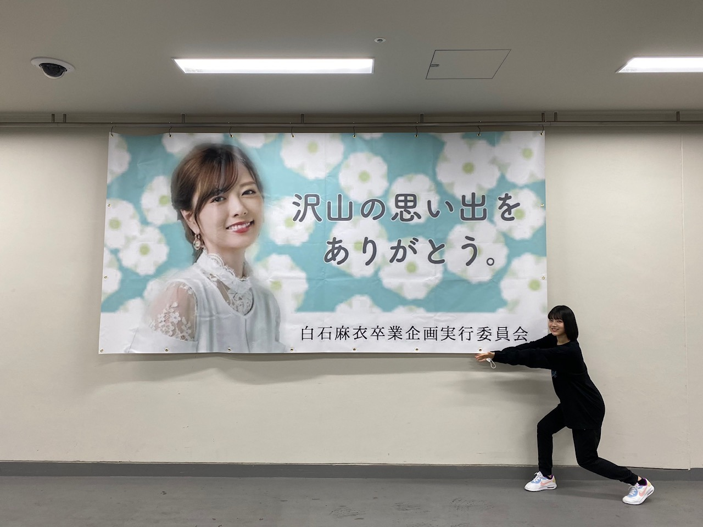
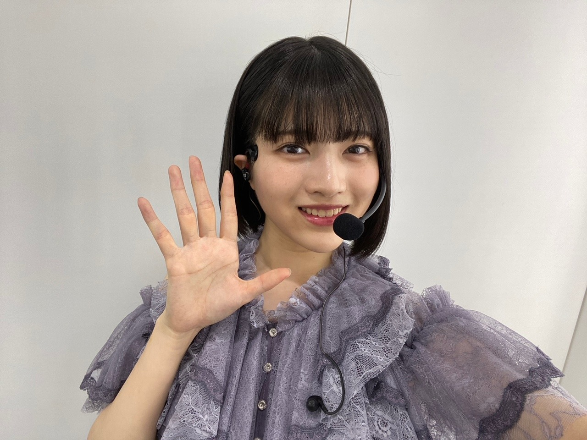
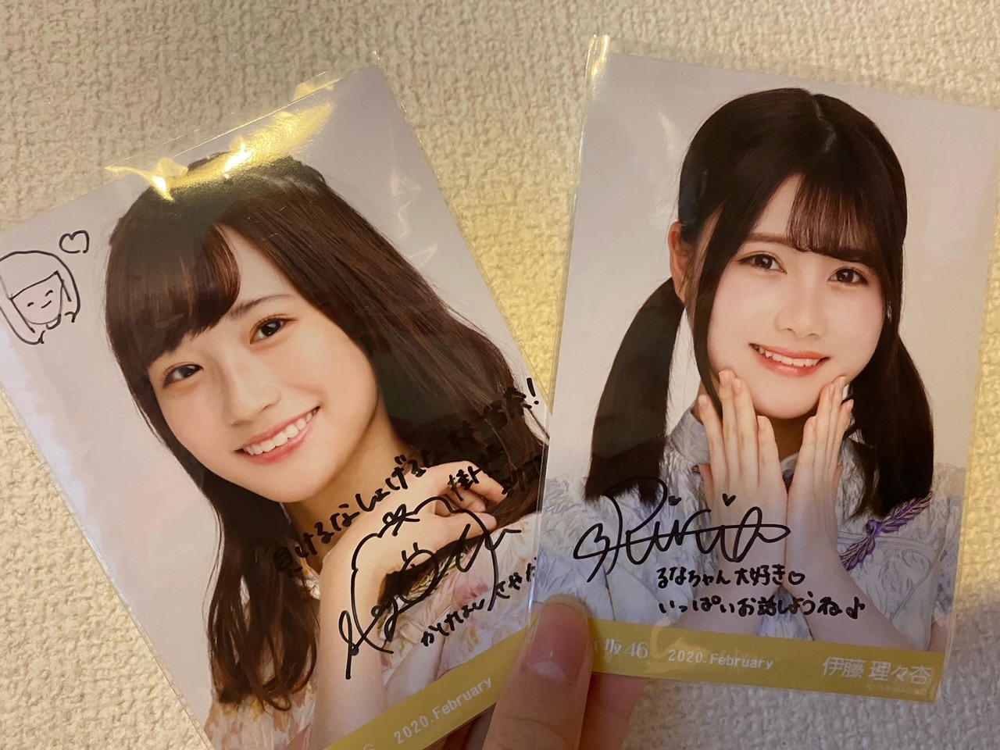
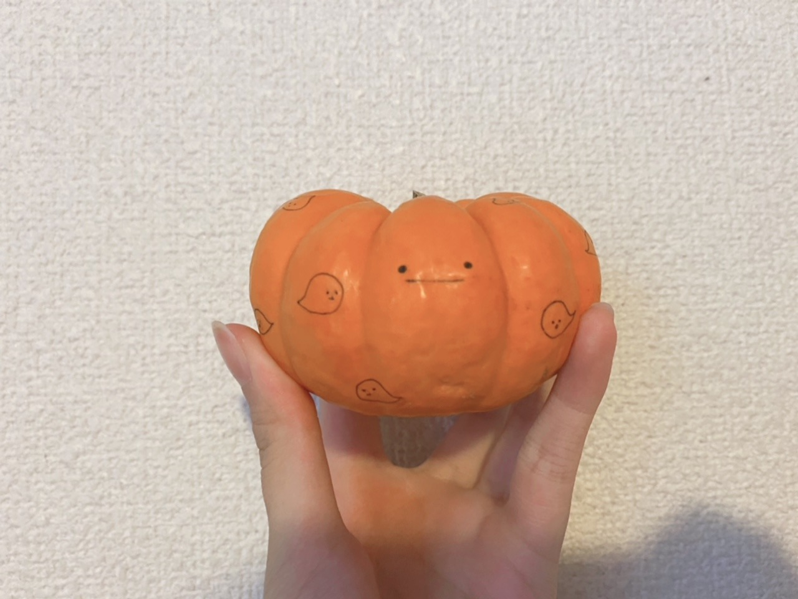
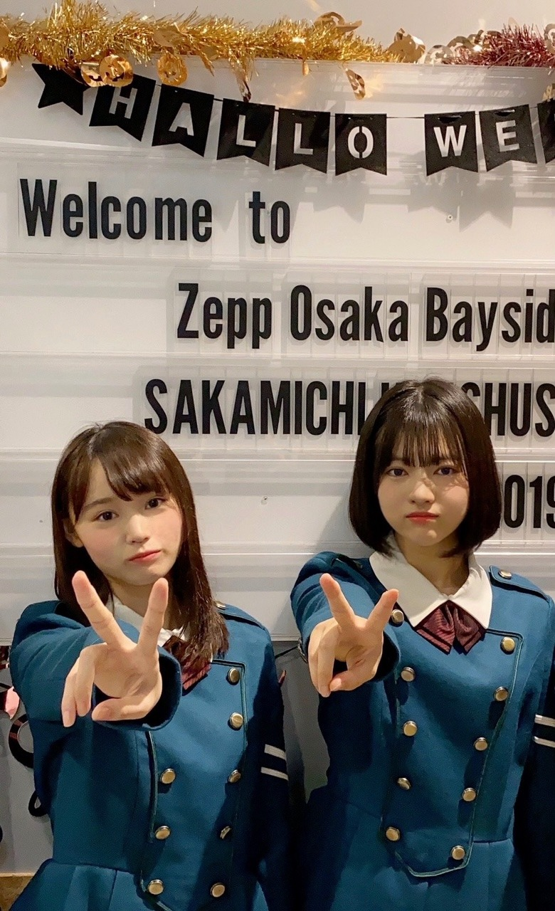

2020/1031Sat皆さん本当にお疲れ様でした！お疲れ様です、林瑠奈です。ハロウィンです！
白石麻衣さん卒業コンサート。
『Mai Shiraishi Graduation Concert ~Always beside you ~』
本当にありがとうございました。
白石麻衣さん。
ご卒業おめでとうございます。
まず、"白石麻衣"さんという字面が大好きで、
もちろん皆さん本当に素敵な名前の方しかいないんですけれども、
わたしが乃木坂46を知るきっかけ
わたしが乃木坂46を好きになったきっかけ
わたしが乃木坂46を友達に薦めたとき
どんな場面でも白石麻衣さんがいらっしゃったなと。
単純に目にする機会が多かったからとか、そういうことではなくて、
何故か"白石さん"よりも"白石麻衣さん"の方がしっくりきます。
何故か"白石さん"よりも"白石麻衣さん"の方がしっくりきます。
アイドルの枠を超えてご活躍なさるお姿も
どんどん磨きがかかるその美しさも
沢山の愛に溢れた内輪で見せる愛嬌のあるお姿も
その全てが、
見ている人たちの心に響いて、生きる希望を与えてくれるのだと、
愛を与えてくれるのだと、
関わらさせていただいた時間は少なかったですが、
その限られたご一緒できる時間で、沢山感じさせていただきました。
初めて先輩方とご一緒するライブ。
リハーサルのときからわたしは緊張し過ぎて、
もはや『緊張』そのものになっていました。
ゲネプロが始まる前、
なおと2人でいたときに白石麻衣さんとすれ違って、
『ご一緒させていただく歌割りのところで、目を合わせてもいいですか？』
と聞くと
「そうだよね！この後のときもやろうよ！」
と本当にお優しく言ってくださって
わたしの心の中は愛の許容量を超えてしまい
愛がぼろぼろと溢れました。
ライブが終わった後、にメンバー全員に向けて言ってくださった、
『これからの乃木坂が楽しみだし、
きっともっともっと大きくなっていくんじゃないかなって思ってます。』
そうなって欲しいとわたしも強く思います。
矮小な自分を成長させてくれた乃木坂46に
少しでも力を注げるよう精進していきます。
白石麻衣さん。
約9年間、3357日。
本当にお疲れ様でした。
今までもこれからも、ずっと大好きです。
一瞬に撮ってくださった写真は宝物にします。

Photo by なお
...........................................................................
本日もお疲れ様です。
乃木坂46、4期生の林瑠奈です。
神奈川県出身高校2年生17歳
華咲くセブンのティーンの林瑠奈です。
負けるなしょげるな林瑠奈、今日も1日頑張るな
(ピンポーン)
38周目となりました、ブログリレー。
今回、初めて先輩方とご一緒させていただいたライブということで沢山思い出があります。
ですが、ここで全て話し切ってしまうのは勿体ない気がするので徐々に話していけたらなと。
写真も色々と撮ったのでまた載せますね。

くろみちゃんの携帯を貸してもらって撮りました。
画質が良いですね

持参していた生写真にサインとメッセージを書いていただきました。
去年の手帳には松村さんの生写真を挟んでいたのですが、今年はこのお二方を挟もうと思います。
ずっとお話ししたいと思っていたりりあさんです！
嬉しいです！
このときのお話も次回します！！
...........................................................................
「ブログのネタになるかな、、」と気を利かせた祖母が送ってくれました。

一緒に撮ろうか迷ったのですが、1年の中でこの方が主役になれるのって今日だけなので、ソロで写っていただきました。
顔を描くべきかなと思ったので、ちゃんと描きましたよ。
かぼちゃん。
...........................................................................
さて亡霊になっている皆さん。
今日は何の日ですか。
前述してある通りハロウィーンなのですが、では1年前の今日は何の日でしょう。
はい、どどーん

無表情ピース
ちょうど1年前の今日の写真です。
どろちゃんです。
研修生ツアー大阪2日目は、『サイレントマジョリティー』から始まりましたね。
『誰よりも高く跳べ！』での音響トラブル、めっちゃ懐かしいです。
15人と会場の皆さんで歌って乗り切ったのが、ツアーでの1番の思い出かなぁ。
後ろのモニターに流れる歌詞と、アカペラのスピードが全くズレていなかったとスタッフさんから聞いて、凄く嬉しかったのを覚えています。
大切でかけがえのない想い出。
あの頃から少しは成長できましたかね、わたし
...........................................................................
明日はミュウちゃんです。
みゆちゃんお疲れ様〜。
アディオス！！！！！！！！！！
かしこ
2020/10/31 16:30

PROFILE
新4期生リレー
202104
| SUN | MON | TUE | WED | THU | FRI | SAT |
|---|---|---|---|---|---|---|
| 1 | 2 | 3 | ||||
| 4 | 5 | 6 | 7 | 8 | 9 | 10 |
| 11 | 12 | 13 | 14 | 15 | 16 | 17 |
| 18 | 19 | 20 | 21 | 22 | 23 | 24 |
| 25 | 26 | 27 | 28 | 29 | 30 | |

コメント(171)
るなぴライブおつかれさま！
ライブを見てこれからもるなぴを応援しようと思いました！！
るなぴかわいいっ！！
卒コン観たよ！
これでるなぴが踊ってるの見たの2回目だー
衣装すごく似合ってました。
友達にるなぴって呼ぶのはおかしいって笑われてからなんて呼ぼうか現在絶賛迷い中です。
とりあえず次ははやしさんって呼ぼうと思います。
ライブお疲れ様！またこれからも頑張って！応援しているよ。
ー質問ー
・写真集を発売するならどこで撮影したい？
・乾燥肌に悩んでいるけど、良い対策はあるかな？
・気晴らしではよく何をする？
ありがとう！次回も楽しみにしているよ。
1年前の今日、私にとってもすごく思い入れのある日です
誰跳べでの音響トラブル、昨日の事のように思い出せます
るなぴがセンターで、すごく楽しみにしていた誰跳べでトラブルがあり、最初は驚きもしましたがそれでも頑張っているみなさんを見て感動したこと、ずっとずっと大切な思い出です
あの時は持っている団扇落としかけました（笑）
この日はいつになっても思い出す大切な日の1つだなぁと思います
これからも大好きです(T T)♡
白石さんほんとにいい人ですよね…… 愛に溢れてる！
僕も乃木坂はこれからももっと大きくなると思います
そこの中心に瑠奈ちゃんがいると思ってます
ずっと応援してるので頑張ろうね！
またブログ待ってます！
もちろん瑠奈ちゃんが推しです
撮った写真いっぱい載せてください
映像や演出が凄く美しくて、きっと観ているファン以上にそのステージに立っている瑠奈ちゃん達の方が感激するものだったんじゃないかなって思いました。
4期生が全員いる「夜明けまで強がらなくてもいい」と 瑠奈ちゃんが好きだと言っていた「立ち直り中」は聴いていて感動しました。
瑠奈ちゃんは背が高くてスタイルが良いので乃木坂のあの清楚な衣装がとってもよく似合います!
少し短くなった髪の毛もとっても似合ってました。黒髪ストレートボブ大好きです!
格好良くも可愛くも綺麗にもなれちゃう髪型だと思います
「サヨナラの意味」の時のしなやかなダンスもとっても素敵でした。
なんだか上手く言えないけれど
「はりるみな」が乃木坂に入ってくれて
メンバーの人数が、ぴったり46人になっていたこの期間は特別な気持ちで過ごせました。
今回もまたレッスンやリハなど頑張ってくれてありがとう。
紫色の林と書かれたビブスを着た瑠奈ちゃんを見てまたまた感動しました
瑠奈ちゃんがステージで歌って踊っている姿をこれからも沢山見てみたいです!
今日もブログ更新ありがとう。
今日も瑠奈ちゃん大好きです
あでぃおす
先日の卒業コンサート最高でした！！これからの乃木坂46に最高の華を咲かしてくれることを楽しみにしています！
去年の今日自分は行くことができず悔しかった研修生ツアーですがツアー後にSNSでみなさんが語っている内容を見て自分も早く生で観たいと願いながら1年が経ちました。この現状が収まりまたライブに足を運べるようになるのを楽しみに待ってます。
次回のブログも楽しみに待ってます∫∫∫
林さん。緊張しすぎてて笑った。
次のライブは緊張しないように頑張って！
ノギスキも先輩と仲良くなってください！
響を与えたかってことですよね。
まいやんと一緒に活動をしたことで、き
っちり遺伝子受け継ぎましたね。
３，４期生ともなると、乃木坂ファンで
ありながらメンバーでもあるという、二
重構造は最早当たり前。
かぼちゃ、形がいいですね。乃木坂メン
バーになると、みんな総出で応援してく
れる。
アディオス。
まずはライブお疲れ様でした！
初めて先輩と一緒に出るライブがあの白石麻衣さんの卒業ライブとはさぞかし緊張されたことと思います。
僕も、みなさんも思っていることだと思いますが、あの「白石麻衣」という字面だけでもオーラが伝わってきますよね。
白石さん9年間、そしてるなぴは配信ライブお疲れ様でした。
かぼちゃん可愛いですね笑
手のひらサイズで真顔でお化けの柄がついているのが面白いです笑
1年前の写真。
見た目も中身もこの頃より一層大人になっているなと感じました。
サイマジョの衣装もお似合いですよ！
3期生が加わった新しいノギスキを楽しみに待ってます！
いっぱい弾けてください！
あでぃおす！！！
ライブみましたよー
るなぴの勇姿もしっかりと目に焼き付けました。
ありがとうございました。
白石麻衣さんならんだときのガチガチの
引き締まった表情が可愛かったです。
これからの活躍も期待してます。
今日、3357cafeに行きました。
お食事を運んできた方の声がるなぴの声に
とても似てて、顔を見たら
マスクしててよくわかりませんでした
でも、るなぴな訳はありません。
初めての先輩方とのライブがまいやんの卒コンはすごく緊張したと思うけど、愛に包まれたところで本当に幸せだね✨
サインも良かったね✨
1年前の写真懐かしいし今と比べたら本当に垢抜けた感が凄い！！
次の更新も楽しみにしてるね！！
今までも分かっていたはずなのに、自分にとっての"白石麻衣"がどれだけ大切だったか気付いた一日でした。
期別やユニット曲、最後の保護色まで全てが"白石麻衣"さんでした。
特に、期別では4期生全員が白石麻衣センターの夜明けでしたね。
カメラ割りも左端だったこともあり、るなちゃんの姿が良く見えました。
本当に綺麗で、儚くて、鮮やかで、畔やかで、素晴らしかったという言葉に収まりきらない愛情が溢れてきました。
本当にお疲れ様でした。
あ、ピンポーン！
サイン入り生写真(*・ω・)ｳﾗﾔﾏｼｨ… 良かったね笑
かぼちゃん、可愛すぎてメロメロちゃん❤
お祖母様によろしくお伝えください。
東名阪ツアー、1年前の筈なのになんだか懐かしく感じます。
ダンスも笑顔も、本当に成長したなと思うし、あの時感じたるなちゃんもしっかりあるな と思います。
るなだけに。ハッハッh(
今月もお疲れ様 いっぱい休んで、またお互い頑張りましょうぜ！
敬答 男爵芋
サイマジョ似合うなぁ…
ってちがーう！
まいやんライブお疲れ様でした
映った瞬間林ー( ｣ﾟДﾟ)｣て叫ぼうかと思いましたが
心のなかに留めました
後ろのほうにいても存在感ある林
もはや森ですね(意味不明)
これからは林見つかって半端ないって！(ちと古いか)
ってな感じで売れまくりすてぃーになるに違いない
したがって、ガンバレ～という結論に至るわけである
「1年の中でこの方が主役になれるのって今日だけ」
どんな時でも主役であった白石さんと今日だけ主役のパンプキン、なんだか対照的で面白いですね。
まいやんの卒コン、配信という形にはなってしまったけど
涙なしでは見れませんでした(´･_･`)
今月は、自分の誕生日があり嬉しい気持ちと、悲しい
気持ちと複雑なんだけど結局はいい方向です！笑
ノギザカスキッツのAct2も楽しみです！！
それではこの辺でチャオ(｀□´)
直筆サインめっちゃ羨ましい笑
メンバーの特権ってやつやねw
受験前やからライブ見れへんかったけど、まいやんが居なくなってからの乃木坂46を盛り上げていく時は期待に押しつぶされず、マイペースに頑張ってな！
これからの活躍を心から願い、応援してます！
また5日後の更新待ってまーす！
あの山下さんのブログと肩を並べるレベルであると思います
これからも読み物として期待しています（笑）
もちろんご活躍も！
白石麻衣さんの卒業コンサートを僕も拝見いたしました。
とても感動して次の日の目が大変なことになりました。
ルナチョスさんもお体に気をつけてくださいね！
まいやんの卒コン配信見たよ、綺麗だったねぇ。
るなぴがパフォーマンスしている姿も見られて良かったよ！時間の都合で辛いこともあったと思うけど、リハや裏側でしっかりとまいやんとお話しできたみたいで何よりです。
サイン入りの写真羨ましい、メンバー特権だね笑
ある層のファンたちが亡霊になってるのを分かってるるなぴ、最高です。
自分はどろもやし派なのでどろちゃんとのツーショット、本当に嬉しい。このペアが1番好きだ〜
研修生ツアー期間だったもんね、この日は15人のアイドルたちが頑張ってくれたからこそ今こうやって応援を続けることができてるって改めて思った１日でした。
少しどころじゃなくたくさん成長してると思うしこれからもっともっと坂を登っていくんだろうなってある種確信のような気持ちです。
これからも楽しく応援して楽しく見守って行けたらなって。
次のブログも楽しみにしてるね〜！
素晴らしいライブでした。白石さんへの愛に溢れたライブでした。乃木坂46は本当に艶やかで華のあるグループだと改めて思いました。お衣装がどれもキレイ。瑠奈ちゃんもどのお衣装もよく似あってましたよ。特に深紅のお衣装がキレイでした。
二人組みで白石さんの横でいっしょに歌う場面が何回かありましたが、緊張した？白石さんと一緒の瑠奈ちゃん、とても可愛く綺麗でしたよ。
瑠奈ちゃんがあの場に立ち会えたことは日本女子の誉れだと思います。
ちなみに、今日の写真の欅坂の制服着た瑠奈ちゃんはとても可愛いが、瑠奈ちゃんが乃木坂に来てくれてよかったと思います。
1年前の昨日です。昨日は事ある毎に(去年の今頃は大阪かぁ)と思っていました。
すっごくワクワクドキドキしたライブでした。
沢山の思い出があります。今でも誰跳べを聞くと瑠奈ちゃんを思い出して幸せな気持ちになります。
キュンとする1言の時、ちょうど瑠奈ちゃんの直前で終わってしまってショックで放心してしまったのも今では良い思い出です…(笑)
また、いつでもたこ焼きにしてくださいね
31日の誰跳べ音響トラブルはライブ後のファンの方のレポで知ったのですが
突然の出来事に動じることなく15人は歌い踊り続け、更に観客と共に大合唱した…と聞いたときは「これは伝説のライブになる!!」と思いました。
去年の昨日と今日は本当にお疲れ様でした。その後の東京と名古屋も本当にお疲れ様でした。
綺良ちゃんとの2ショットありがとうございます。
けやかけで見た楽屋での様子の綺良ちゃんがめちゃくちゃ面白かったのを見て
"きらるな"が一緒にいるところももっと見たかったな~なんて考えちゃいました…(笑)
だって絶対面白いもん！
それからいつか"きらるなまりの"の3ショットも見てみたいな
今日も瑠奈ちゃん大好き
あでぃおす!!(かしこ)
お疲れ様！ 私も乃木坂46を知るきっかけになったのは、まいやんだったよ
（そういえばまいやんの隣にるなちゃんが行った時めちゃくちゃガチガチだったよね
生写真にサインとメッセージ。羨ましい．．．。
良かったね！！
かぼちゃん、主役喜んでると思うｗｗ
あれからもう1年くらいたつんだね。意外．．
愛媛県在住 中３女子 音より
追伸：今日も一日お疲れ様！
写真が小さいｗｗ
なんだか すみっコぐらしのキャラクターにいそうなお顔
私もハロウィンなのでかぼちゃを主役にした料理つくりました~。旬は夏なのに、秋に主役になってしまうかぼちゃさん…。
秋でも十分美味しくいただけました
るなちゃんは、完全にアイドル完成形間近です。
あと、経験があれば
鬼に金棒です。
いろんなまいやんコメント見ましたがるなちゃんのコメはまいやんが凄く身近に感じて素晴らしい文章です。
本当にありがとうございます。
偉大な先輩は生き様を見せてくれていると思います。
るなちゃんに合った生き様を参考にますます飛躍して下さい。
必ずあなたの時代は来ます。間違い泣いてましたです。
まずはまいやんの卒コンお疲れ様でした！！
まだ卒業したっていう実感沸かないな…(笑)
でもすごく感動した素敵なライブでした！！
るなぴのライブパフォーマンスも初めて見たけどすごくよかったよ！(誰目線)
あと、サイン入り生写真、あれ羨ましすぎます(笑)
メッセージ付きなんて絶対家宝になるじゃん(笑)
今年はハロウィンらしいハロウィンじゃなかったけどるなぴのブログでちょっとハロウィン気分味わえました！(笑)
また次のブログも楽しみにしてるね！
読んでて文章が凄く読みやすいし面白いね。
まいやん様はね、同じグループとして活動してたらもちろんだと思うけど、そのグループのファンでいるだけでも少し誇らしく思えるほどだよ。
ポストなんちゃらとかじゃなくて乃木坂を支えていく、引っ張っていく存在になってくれたらと思います。
「白石麻衣」の名前いいよね！
4期生は特にファン歴長そうだし緊張しそうやねぇ
はやし緊張しすぎて表情固まってんなと思って
面白かったけど、ダンスもめっちゃ綺麗に踊ってて
すごく感動した！
はやし手足スラッとしてるからゆっくりした曲映えるね！！
まいやん卒業しちゃったからYouTubeとか応援しつつ
乃木坂ではこれからは一番はやし推してくね！
っていうか卒コン一通り語った後通常挨拶に入ってくの
なんかエモい。
はやし情報小出しにしてくのうまいな笑
めっちゃ気になる！
やっとりりあちゃんとお話しできたのね！おめでとう！！
唐突に質問
はやしはブログ更新してから何日後までの
コメントを見るんですか？
それとも次の更新の時に前のを
まとめてみたりしてるんですか？
一応毎回コメントしてるけどたまに遅れるから
めっちゃ気になる
……………………………………………
おばあちゃんもセンスあるね笑
ソロかぼちゃんもめっちゃ嬉しいって
思ってるでこれは笑
っていうかおばけめっちゃ可愛い笑
かぼちゃも可愛いし、はやしってオムライスとか
描くものがかわいいな笑
これグッズ化してくれたら買います笑
2、3千円ならだす笑
研修生ツアーから1周年おめでとう！
欅衣装かわいい！！
ツアーは見てないけどめっちゃ成長したと思う！
プロ意識とか！ファンサとか！笑メイクとか！
今日はめっちゃ！マーク多い！笑
アディオス
敬語
あっ人生面白くなかったのでノリでYouTube始めてみたら
まだ投稿してないけどめっちゃ今楽しいです笑
かしこ
去年の大阪のライブ見に行きました！正直舐めてました。研修生だしなーって。ごめんなさい。始まると圧倒されました。音響トラブルにも負けない姿。自然と涙がでました。そこで林瑠奈ちゃんを見つけました。見つけさせてくれてありがとう。
あと、きっと成長できてるのではないかなーっとおもいます。上手く言えないけど、成長していなかったらこんなに惹き付けられないのでは無いかなって思うので！上手く言えないけど！笑
けど、期待に応えようとしすぎて心が疲れちゃわないようにね。君らしく君のしたいように頑張って欲しい。その姿にとても惹き付けられます。
恥ずかしくなってきたのでおわります！笑
アディオス！！！！！！！！！！
しーさん卒業は悲しい。サヨナラにつよくなりたい。
でも、乗り越えてみんなと一緒に坂を登っていきたいです。
質問「かるかんって食べたことありますか？」
鹿児島のお菓子です。機会があれば是非。。
そんじゃ今回はこの辺でアディオス！！アディオス！！！
(大事なので2回言いました。ハッピーハロウィン。今夜は満月)
ライブお疲れさまでした
白石麻衣という存在が乃木坂に居たから、るなぴも今ここに居るか？
ならば、るなぴを乃木坂に導いてありがとうと感謝の気持ちを伝わなきゃよね(｡>﹏<｡)
画像ちっちゃっ(ﾟдﾟ)！（笑）
あっ、でも保存したら普通のサイズで見れるよ(*´ω｀*)♪
生写真を持参するるなぴ、ガチヲタるなぴ最高すぎるよ＼(^o^)／（笑）
りりと話して良かったよ＼(^o^)／詳細は次回のブログか？楽しみ
かぼちゃん、今後もるなぴのことよろしくね（笑）
亡霊に鳴った皆さんって（笑）
しかもやんちゃんの誕生日じゃないんかい！（笑）
無表情面白すぎるよ（笑）
これからも頑張って(/･ω･)/
あれ？結局バトンや馬車も全部無くなったかな？（笑）
好きな四字熟語は？
ハロウィンだね！カボチャ可愛い
ブログの更新とライブお疲れ様〜！
私はるなちゃんとりりあちゃん推しなのでサイン羨ましい、、！
るなちゃんが書いたのも見てみたいなぁなんて、、(⑉• •⑉)
用事があるのでここら辺で！
今日もお疲れ様でした大好きです( • •)❤︎
瑠奈ちゃんのハンズフリーマイクを付けたライブの衣裳を着た姿、素敵ですね。あと、昨年のサイマジョの衣裳も最高です。
（ぴんぽーん）
めっちゃわかるわー。
「白石麻衣」
この字面だけで神々しいもんね。
字だけでご利益ありそうだもん。
アディオっ！
かし子（笑）
更新ありがとー
りょうたです！
ライブお疲れ様でした、初めての先輩方と一緒のライブはどうでしたか？
"まいやん"も先頭に立って乃木坂を引っ張ってくれた内の1人ですよね!!風当たりが強いのに自分の為、乃木坂の為に頑張る姿は素敵でした！
曲が始まる前の「ガールズルール」のまいやんの煽りは何度聞いてもカッコ良すぎて鳥肌がたちます
かなりん、まいやんとご一緒できた時間は少なかったかと思いますが、得ることも多かったと思います!!
それを糧に成長していくるなぴが楽しみです
トラブルもあって、誰跳べのアカペラを聞けるとはとても貴重な体験ができました!!音楽無しでの15人の歌声がほんまに素敵でした!!(ナイス音響トラブルｗ)
間違いなく当時より成長できていると思います！！
きらるなの写真良いですね！亡霊が捗ります。
ライブ中、最前列というもう2度と取れないであろう位置で、この光景を忘れないようにずっと目で追っていた時
何度か目が合ったような気がする(ヲタク特有の勘違い)のですが目が合うのが恥ずかしくて目を逸してしまいましたすみませんｗ
俺の大切な思い出はるなぴと目が合ったような気がした時、勇気を振り絞り手を振ったのですが無反応でしたｗ
まぁ、緊張してるやろうしそもそも目が合ってなかったかも。と納得してましたｗ
ブログ更新に素敵な写真をありがとう！
これからも応援しています!!
--∫-- ∫-∫-- ∫∫ # ∫-∫∫∫ ---∫-
前回みたいにコメントを消してしまうという同じことはしない様にしないと…気をつけてやろっとーと心に誓ったりょうたです。
まいやん卒コン見たよ。まずはお疲れ様でした。8バスラと今回の配信で最後になってしまうけれどもまいやんとのライブはどうだったでしょうか？とても貴重な時間だったのではないかなぁって…
僕はなかなか入れず何曲か見逃してしまいました。
夜明けまで強がらなくてもいいのまいやんとるなぴたちの4ショット
朝日が見えてきた。の、りかちゃんとの2ショット
つれーだしてくれるのーかーのピンショット。どれもよかった。
そして何よりまいやんの美しさに素晴らしさに感動した！時間的に最後までいられなかったと思いますし、心残り、最後まで一緒にという気持ちが強かったのではないでしょうか。4期生でいうとあやめん、るなぴもそうですが僕も最後まであなたたちを観たかったしそう言った部分もすこし心残りです…
あと何年かすれば最後までいられるのでその頃にライブがまたできるようになるといいなぁ。と思いますね…
最後の、じゃあね、しあわせの保護色とても良かったです。本来はドームでやるはずが配信という形になってしまったしかいじょうならもっと泣けてた。こんな形で最後のお別れとは運命というものは時に儚いものだと感じましたね。
個人的には立ち直り中からの偶然を言い訳にしてからのでこぴんここがよかったなぁって思った。好きな曲でもあるし
実際にはどれもよかったんだけどね笑
さて乃木坂の時代を気づいてきたメンバーがまた1人卒業してしまいメンバーとしてもまたファンとしても悲しいものがありますがここまで築き上げてきたものを今度はみんなが受け継ぐ番ですね。これからも前を向いてやっていかなければならない。
ま、何はともあれ無事卒業を見送れてよかったなと思いますね。お疲れ様でした。
なんかライブでの感動話の後に何を書けばいいかわからなくなってきたけどとりあえず事後報告と言うことで…
ノキザカスキッツ結果見たよ。まさかのかっきーが1位とは…まゆたんはやはり入ってたね。ランキング見てたけどるなぴ18位に入ってたね。新4期の中でも唯一だったよね。とりあえずランクインしてて何よりやったんですが僕が予想してたキャラクターとは違って謎のウェイトレスがランクインしてた。
とりあえずおめでとう笑
継続決定して3期生も加わってさらに面白くなりそうだね。ACT2ではどんなキャラで来てくれるのか楽しみですね。
今回も9時過ぎかなぁって思ってバイトしてたらこんなに早くなってなって今読んでます
まいやんの卒業ライブ見ました。
コメントする